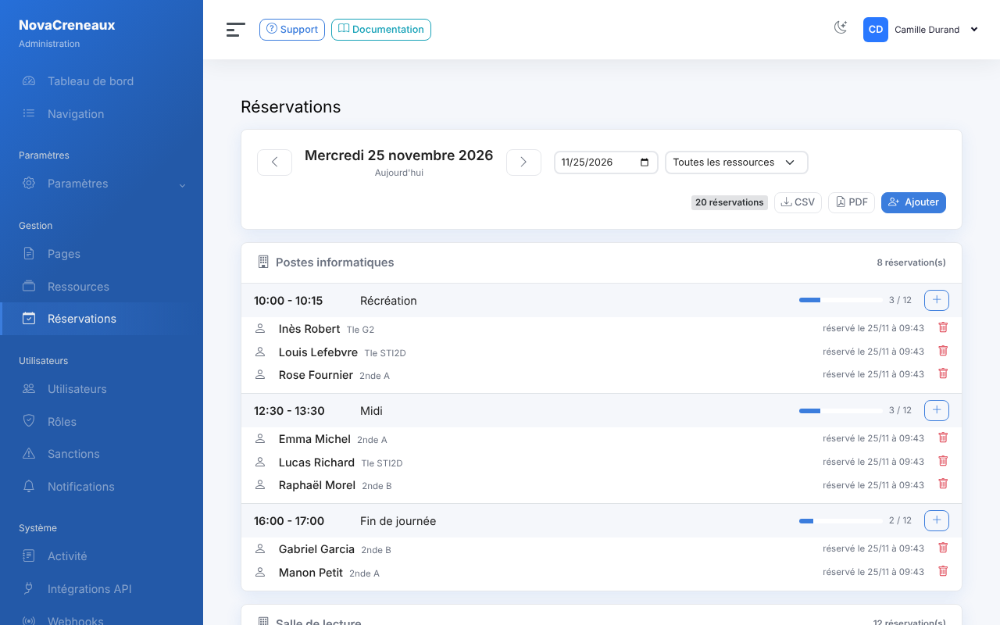
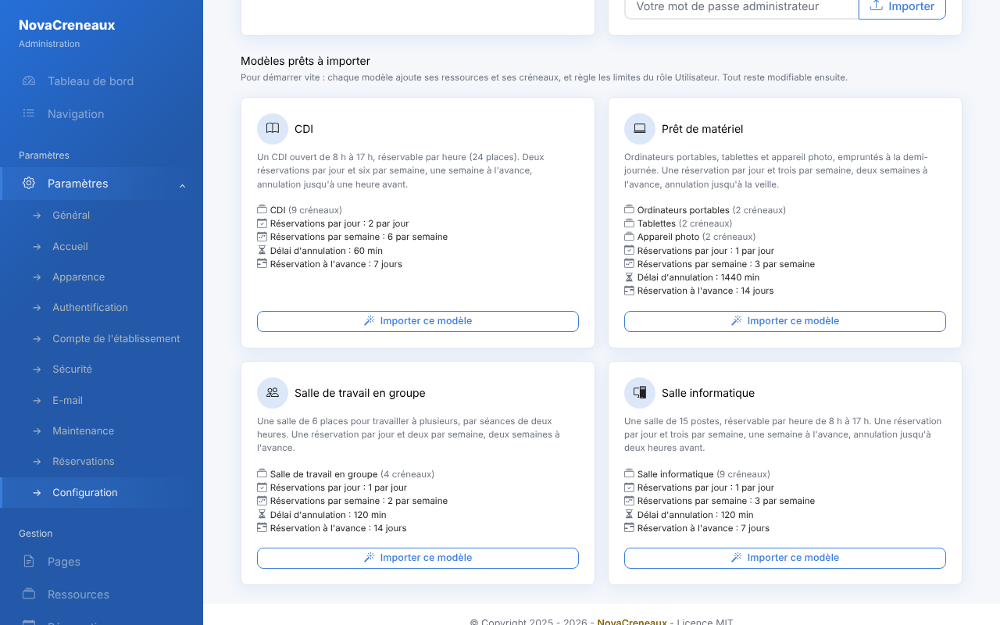
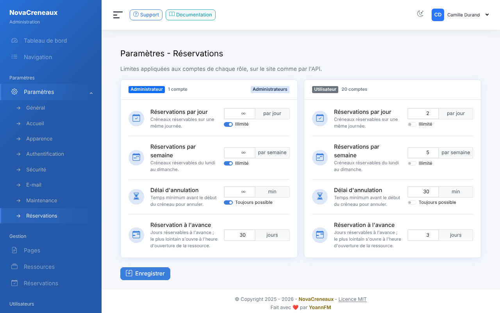
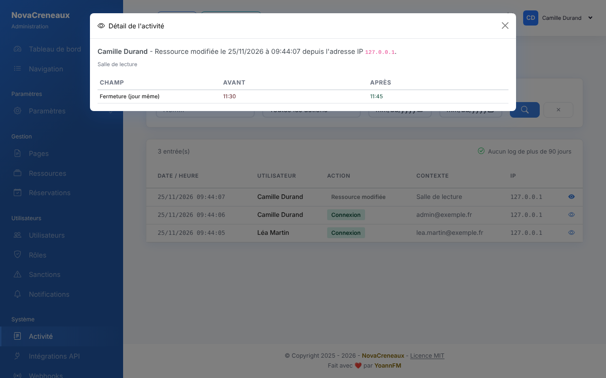
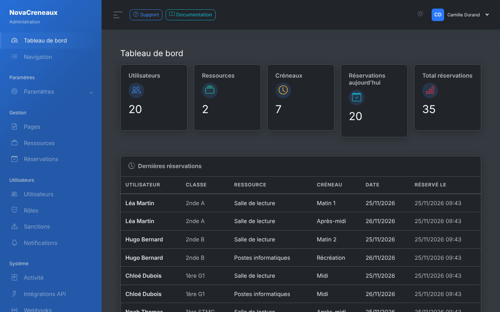
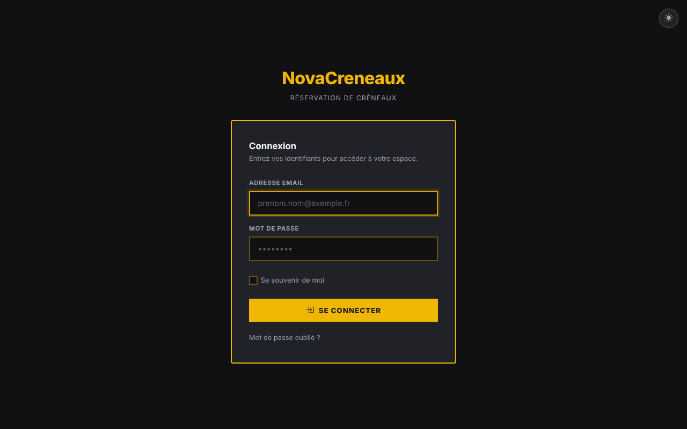

Pour quels usages ?
Tout ce qui se réserve par créneau, avec un nombre de places et des règles d'accès.
CDI et médiathèque
Places de lecture et de travail par heure, ouverture des réservations la veille à l'heure choisie.
Salle informatique
Postes réservables par séance, avec une limite par jour et par semaine pour partager équitablement.
Salle de travail en groupe
Séances longues pour travailler à plusieurs, réservables plusieurs jours à l'avance.
Prêt de matériel
Ordinateurs portables, tablettes, appareils photo, empruntés à la demi-journée.
Entièrement configurable
Rien de propre à un établissement n'est écrit dans le code : tout se règle depuis l'administration.
Modèles prêts à importer
CDI, salle informatique, salle de travail, prêt de matériel : ressources, créneaux et règles en un clic, à ajuster ensuite.
Règles par rôle
Réservations par jour et par semaine, délai d'annulation, nombre de jours à l'avance, pour chaque rôle.
Vocabulaire et apparence
Nom, logo, couleurs, thème clair ou sombre, « élève » ou « adhérent », « classe » ou « service », textes des e-mails.
Export et import
La configuration tient dans un fichier, sans aucun secret : à garder, ou à reprendre sur une autre installation.
Aperçu
Quelques écrans du site et de son administration.






Fonctionnalités
L'essentiel pour une utilisation au quotidien, sans module payant.
Pour les personnes qui réservent
- Places restantes en direct
- Historique et annulation jusqu'à l'heure limite
- E-mails de confirmation et d'annulation
- Connexion avec le compte de l'établissement (OpenID Connect ou CAS)
Pour le personnel
- Ressources, créneaux, jours de fermeture
- Réservation pour le compte d'un élève
- Import CSV des comptes, actions groupées, suspension
- Permissions délégables par rôle
Pour l'administrateur
- Mises à jour en un clic, par archive signée, avec retour en arrière
- Sauvegardes automatiques de la base
- API REST documentée et webhooks
- Journal d'activité détaillé
Installation
Un hébergement PHP 8.3 avec MySQL ou MariaDB suffit. Node.js n'est pas nécessaire.
- Téléchargez l'archive
novacreneaux-X.Y.Z.zipde la dernière version et décompressez-la sur le serveur. - Faites pointer la racine du site sur le dossier
public/. - Créez la configuration :
cp .env.example .envpuisphp artisan key:generate. - Ouvrez le site : l'assistant vérifie les prérequis, configure la base de données et crée le compte administrateur.
- Ajoutez la tâche planifiée :
* * * * * cd /chemin/vers/novacreneaux && php artisan schedule:run. - Dans Paramètres > Configuration, importez le modèle qui correspond à votre usage.
Licence
NovaCreneaux est un logiciel libre distribué sous licence MIT : vous pouvez l'utiliser, le modifier et le redistribuer librement. Aucune donnée n'est envoyée à l'auteur.